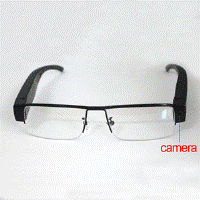
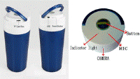
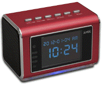

HD Spy Camera Light Switch
Nama Anggota Kelompok :
(161112863) William Pinandang Sihombing
(161113524) Andrian Junanto Chong
(161112626) Ebenezer Sihombing
(151111518) Erik Sembiring
(161111779) Firdaus

Spy Camera
HD Spy Camera Light Switch with GSM Remote Control adalah produk smarthome berbentuk saklar lampu yang sudah didukung oleh sebuah kamera pengintai yang dapat merekam otomatis ketika mendeteksi sebuah gerakan (motion detection).
Lanjutan
Dengan begitu HD Spy Camera Light Switch with GSM Remote Control, Anda tinggal menempatkannya di samping saklar lampu di dalam ruangan kantor atau rumah. Pemasangannya pun sangat mudah, cukup tempelkan saja di tembok ruangan Anda karena alat pengintai ini sudah dilengkapi dengan stiker perekat di bagian belakangnya.Perangkat ini bisa merekam video plus suara dalam format HD 720p. Kamera pengintai ini juga dilengkapi dengan koneksi GPRS, sehingga ketika alat ini mendeteksi pergerakan akan otomatis merekam dan sekaligus mengirim video dalam format 3GP (320 x 240 @30 fps) ke ponsel Anda.
Selain itu perangkat tersebut juga bisa mengirimkan foto melalui MMS dengan format JPEG berukuran 1280 x 960.Karena di dalamnya disematkan SIM card, Anda dapat melakukan live streaming melalui ponsel, sehingga Anda bisa melihat apa yang sedang terjadi dalam ruangan secara langsung. Semua kejadian akan direkam di micro SD memory card yang juga sudah ada di dalamnya. Hasil rekamannya pun bisa ditransfer ke laptop atau PC melalui kabel USB. Perangkat pengintai ini sudah dilengkapi dengan port mini USB yang juga berfungsi sebagai koneksi untuk mengisi ulang baterai.
Kegunaan Spy Camera
-
Kegunaan Spy camera ini diantaranya untuk mengambil objek seperti camera, merekam suara, merekam video, kapasitas video sampai 2 jam dengan kapasitas penyimpanan data sebesar Min 8GB dan Up to Max GB, fila dapat dipindahkan ke laptop atau computer dengan mudah, dan sangat berguna untuk Anda saat ingin merekam foto/audio/video untuk aktivitas tertentu yang tak ingin diketahui oleh orang lain.
-
Untuk penggunaannya sebelum merekam, terlebih dulu masukkan kartu micro SD pada lubang Micro SD, kemudian tekan tombol power selama 3 detik dan lepas, kemudian lampu indikator pun akan menyala. Setelah itu, tekan tombol yang selama 2 detik sekali lagi sampai lampu berkedip 3 kali lalu padam, ketika padam inilah spy camera ini sedang melakukan perekaman video.
Perkembangan Spy Camera
Spy Camera merupakan sebuah alat video kamera yang berfungsi untuk mengawasi atau merekam di area tertentu yang diawasi oleh pengawas kamera dengan cakupan publikasi terbatas, untuk menghindari kejahatan ataupun kejadian dan dapat diputar ulang kembali. pertama sekali ditemukan pada tahun 1942 oleh Walter Brunch dan pertama sekali digunakan pada peluncuran roket V-2 di Jerman.awalnya diproduksi oleh perusahaan Siemens AG, yang pada waktu digunakan untuk mengawasi proses peluncuran roket V-2 dengan tujuan agar dapat diketahui apakah berfungsi dengan baik atau tidak.
Pada tahun 1949 digunakan di Amerika Serikat sekitar 7 tahun setelah digunakan di Jerman. Pada saat itu kamera pengawas diproduksi oleh perusahaan bernama Vericon dan digunakan untuk mengawasi kota New York.Penggunaan CCTV di kota New York saat itu bertujuan untuk mengawasi kejahatan yang mulai marak, dan digunakan di tempat-tempat umum terutama di sepanjang jalan untuk mengawasi orang-orang yang mencurigakan.Maka dari itu seiring berkembangnya zaman teknologi pun semakin canggih, sehingga banyak dipakai di perusahaan,di jalan raya, di kasr pembayaran yang berfungsi mempererat keamanan.
Jenis-jenis Spy Cam
- Kacamata SPY Cam
- Tempat Minum SPY Cam
- Radio SPY Cam



Fitur-Fitur dari Perangkat SpyCam
- Wireless WIFI
Dengan scan code untuk mendownload aplikasi, Anda dapat mengontrol kamera ke prangkat smartphone dengan jangkauan tertentu dari WiFi. Anda dapat mengontrol secara live streaming dimanapun dan kapanpun.
- High Definition
High Definition Video atau HD Video adalah kualitas video yang lebih tinggi dibandingkan SD Video. Memiliki kualitas gambar diatas 480p atau 720p
- Night Vision
Dilengkapi 6 lampu LED yang tidak terlihat oleh mata manusia untuk mode malam yang disempurnakan.
- Universal Adapter
Adapter universal dengan kamera tersembunyi mudah terpasang dan mengoperasikan resolusi Video.
- Motion Detection
Camcorder kecil yang tersembunyi mengambil gerakan untuk melakukan perekaman secara instan. Sistem pendeteksi gerakan ini dapat menganalisa frame video dan menentukan apakah apakah telah terjadi pergerakan di area yang telah ditentukan oleh pengguna.
- Multiple Uses
Digunakan sebagai Cop Cam, Nanny Cam, Body camera, Sports Action Cam, atau pada Drone
- Waterproof
Tahan air, sehingga dapat digunakan diluar ruangan saat cuaca hujan
- Audio Recording
Merekan suara dengan hasil kualitas audio yang lebih baik
- PC WebCam
Mengambil video dan audio, mendeteksi gerak mendukung rekaman sambil bergerak.
Spesifikasi HD Spy Camera Light Switch with GSM Remote Control
- Color: White
- Video Format: 3GP (320 x 240 @30fps)
30fps (30 frame per second) dapat diartikan sebagai 30 gambar yang menyusun gerakan dalam sebuah video dalam waktu satu detik. Jadi dalam 1 detik ada 30 gambar yang dipercepat.
- Picture Format: JPEG (1280 x 960)
format JPEG cocok untuk gambar yang memiliki komposisi warna yang banyak dan memiliki gradien (perubahan satu warna ke warna lain secara perlahan).
- Working Frequency Range: GSM900, GSM1800, GSM850, PCS1900
Teknologi GSM banyak diterapkan pada komunikasi bergerak, khususnya telepon genggam.
- Ukuran Switch:84mm x 84mm x 19mm
- Max Micro SD Card supported: 8GB (2GB TF card included)
kapasitas maksimal kartu memory adalah 8GB
- Baterai: 1200mAh
- Remote Arming: Yes
- Remote Review: Yes
- PIR Alert: JPEG picture sent to mobile phone via MMS
- Ports: Mini USB, Micro SD slot, SIM card slot
Tersedia slot atau colokan
- Working Protocols: GSM phase 2/2+ (including GPRS)
Layanan pembawa baru untuk GSM yang sangat meningkatkan dan menyederhanakan akses nirkabel ke jaringan data paket, misalnya, ke Internet.
Daya tahan baterai hanya 1200 mAH
Multimedia Messaging Service adalah sebuah standar layanan pesan telepon yang memungkinkan untuk mengirim pesan yang mengandung objek multimedia, seperti gambar, audio, video, dan rich text.
Kelebihan
- Saat diletakkan dirumah tidak terlalu terlihat karena berbentuk saklar lampu
- Kamera akan merekam ketika mendeteksi sebuah gerakan
- pemasangannya sangat mudah, cukup tempelkan saja di tembok
- Perekam ini bisa merekam video dan suara
- Dilengkapi dengan koneksi GPRS, Sehingga saat merekam bisa sekaligus megirim video ke ponsel kita
- Bisa mengirim foto melalui MMS dengan format JPEG Berukuran 1280x960
- Memiliki SIM Card
- Bisa melakukan streaming melalui ponsel
- mampu beroperasi pada frekuensi GSM900, GSM1800, GSM850, dan PCS1900
Kekurangan
- Masih didukung dengan baterai sebesar 1200 Mah
- Sekalipun mudah dalam pemasangan namun harus tetap memperhatikan lokasi pemasangan agar tidak mencurigakan
- Hanya mampu menampung memory sebesar 8 Gb
Keunggulan HD Spy Camera Light Switch dari pesaingnya
- Desain yang bagus sesuai dengan switch lamp untuk mengelabui orang
- Harga yang cukup murah dengan Spesifikasi yang diberikan
- Di desain dengan mendukung jaringan GSM Indonesia